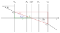
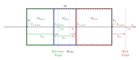

5.4. Ray Transfer Matrix Analysis#
5.4.1. ABCD Matrix#
In paraxial optics, the relationships between angles \(\theta\) and distances \(x\) relative to the optical axis can be expressed linearly. The ABCD matrix, a fundamental concept in this context, encapsulates the linear components necessary to compute the output parameters from the input values for a system characterized by the same matrix. This relationship can be represented as: [1]
Element |
Description |
|---|---|
\(A\) |
positional scaling |
\(B\) |
position change depending on input angle |
\(C\) |
angle change depending on input position.
Equivalent to \(-\frac{1}{f}\), with \(f\) being the focal distance
|
\(D\) |
angular scaling |
Zero matrix elements, as described in Table 5.4, hold particular importance as they indicate specific cases of imaging and focusing.
Case |
Description |
|---|---|
\(A=0\) |
parallel to point focussing,
output lies at second focal plane
|
\(B=0\) |
point to point focussing (image of an object),
input and output lie at conjugate planes,
\(A\) gives the image magnification
|
\(C=0\) |
parallel to parallel imaging (afocal or telescopic system),
\(D\) gives us the angular magnification
|
\(D=0\) |
point to parallel imaging (e.g. headlamp),
input lies at first focal plane
|
An important relationship is that the determinant of an ABCD matrix, denoted here as \(M\), always equals the ratio between the refractive indices of the preceding medium \(n_i\) and the subsequent medium \(n_o\) [3].
5.4.2. Propagation through Free Space#
An ABCD-Matrix for free space with distance \(d\) has the following form: [3]
5.4.3. Refraction on a Curved Interface#
An ABCD matrix for free space over a distance \(d\) is represented as follows [3] :
5.4.4. Refraction on a Flat Interface#
When \(R \to \infty\), which is equivalent to a flat interface, the matrix simplifies to [3] :
5.4.5. Thick Lens#
For a thick lens, several parameters are to be considered: The lens has a refractive index \(n\), front surface curvature \(R_1\), and back surface curvature \(R_2\). Its thickness is \(d\), with a medium of refractive index \(n_1\) in front and a medium of refractive index \(n_2\) behind. Using ray transfer matrix analysis, this system is represented by the product of the front surface matrix \(\text{M}_\text{c1}\), the free space propagation matrix \(\text{M}_\text{s}\), and the back surface matrix \(\text{M}_\text{c2}\). It is important to note that matrices are multiplied from right to left. The resulting matrix can be expressed as: [4]
When the surrounding media are identical, i.e., \(n_0 := n_1 = n_2\), the matrix simplifies to:
5.4.6. Thin Lens#
In general, the matrix element \(C\) can be interpreted as the negative inverse focal length, \(-\frac{1}{f}\). For a thin lens, where \(d=0\), equation \(TMA_thick_lens_complete\) simplifies to:
When \(n_i = n_o\), resulting in \(D=1\), the matrix aligns with equations commonly found in the literature, as referenced in [3].
5.4.7. Lensmaker Equation#
For the thin lens, the element \(C\) was equal to \(-\frac{1}{f}\). Negating this element from equation (5.70) and applying \(-(n_1 - n) = (n - n_1)\), we obtain the focal length in the forward direction:
Performing the same calculations with the media and curvatures swapped yields the backward focal length:
In its expanded form, this is:
Both equations above are consistent with [3] For \(n_0 := n_1 = n_2\), we derive:
This is the typical form of the lens maker equation [5].
5.4.8. Gullstrand Equation#
Utilizing definition (5.86) and equation (5.73), and defining \(D\) as \(D_2\) from now on, we can express:
This is equivalent to
With the surface optical powers \(D_\text{s1} = \frac{n-n_1}{R_1}\) and \(D_\text{s2} = -\frac{n-n_2}{R_2}\) this simplifies to:
5.4.9. Cardinal Points#
The following calculations are derived from [8] and [3]. Both sources also offer textual and graphical explanations of cardinal points and planes.
Vertex Points
The vertex points \(V_1\) and \(V_2\) are positioned at the optical axis and represent the front and back of the lens respectively.
Principal Points
Nodal Points
Focal Lengths
Focal lengths are given by the negative inverse of \(C\) as well as equation (5.74).
Focal Points
EFL, BFL, FFL
Effective focal length (EFL), back focal length (BFL) and front focal length (FFL) are defined as follows:
5.4.10. Optical Power#
The default definition in optrace considers the optical power as the inverse of the geometric focal length.
The alternative definition below has the advantage that \(D_\text{1n} = -D_\text{2n}\) holds true independently of the refractive media.
However, in this case, the focal lengths do not represent the actual distance between the principal plane and the focal points. For \(n_1 = n_2 = 1\), both definitions are equivalent.
5.4.11. Lens Setups#
To evaluate setups of \(N\) lenses, the lens matrices \(\text{M}_\text{L,i}\) and the free space matrices \(\text{M}_\text{s,j}\) need to be multiplied. Here, \(i \in \{0, 1, \dots, N\}\) and \(j \in \{0, 1, \dots, N-1\}\) holds.
5.4.12. Optical Center#
General Case
The optical center is the axial position where nodal rays intersect with the optical axis, as illustrated by Fig. 5.12.
{kind=link}

Fig. 5.12 Optical center of a lens.#
For the yellow triangle, the following relation holds:
From the green triangle, we derive:
Note that the minus sign was added so both equations maintain the same sign. Inserting (5.88) into (5.89) gives:
The blue triangle leads to:
With paraxial rays, the approximation \(\theta_1 \approx \tan \theta_1\) holds. Therefore, \(x_2\) can be calculated using the ABCD matrix of the setup:
Inserting into (5.90) gives us:
From (5.81), it follows that:
Which can also be inserted into the equation (5.93). After some rearranging we obtain:
This value needs to be added to the front vertex to get the absolute position of the optical center:
The requirements that were implicitly assumed include the existence of a nodal point (\(C \neq 0\)) and that the input and output positions differ (\(x_2 \neq x_1\)). The only scenario where it makes sense to define an optical center, despite these conditions, is for an ideal lens. In this case, we set \(\text{OC} = V_1\), although a nodal ray does not cross the optical axis at that point. In all other cases, particularly when \(1 - A + \frac{BC}{D - 1} = 0\) or \(D = 1\), the optical center is undefined. As mentioned previously, an ideal lens (\(A = 1, ~B=0, ~C\neq 0, ~D=1\)) is an exception.
Thick Lens/Lens Combination with Same Front and Back Medium
With \(m := \frac{n - n_0}{n}d\) matrix (5.71) becomes:
The denominator of equation (5.96) is then:
Leading to the final form of (5.96):
Equation (5.99) is consistent with the results in [9]. As mentioned in [10], in this case, the optical center is completely independent of the wavelength and the material dispersion.
Applying the same approach to two ideal lenses with focal lengths \(f_1\) and \(f_2\), separated by a distance \(d\) and surrounded by the same ambient media, results in a similar form:
For \(R_2 = -R_1\) in (5.99) or \(f_2 = f_1\) in (5.102) the optical center lies at exactly the center of the lens/lens combination.
5.4.13. Image and Object Distances#
Positions
The matrix representation for additional object distance \(g\) and image distance \(b\) is given by:
In this context, the distance \(b\) is measured relative to the lens vertex point \(V_2\) and the distance \(g\) is measured relative to \(V_1\), with both distances considered positive when oriented towards the positive z-direction.
For the imaging element, it is essential that \(B_{b,g} = \text{M}_{b,g}[0, 1]\) equals zero. This condition ensures that the output ray position \(x_2\) is independent of the input angle \(\theta_1\), relying solely on the input position \(x_1\).
Consequently, the condition can be expressed as:
For \(b, g \in \mathbb{R}\), the solution is represented as:
For special cases concerning limits approaching \(\pm\infty\), we derive:
Optrace assigns NaN (not a number) in all cases of \(\emptyset\) and \(\mathbb{R}\), as these cases are impractical.
For a matrix \(\text{M} = \text{M}_\text{thin}\) representing the thin lens approximation, derived from equation (5.72), the expressions simplify to:
These expressions are consistent with the well-known imaging equation:
In the most common scenario, where \(n_i = 1\) and \(n_o = 1\), this simplifies to: [11]
Here, \(f\), \(b\), and \(g\) are considered positive if measured in the positive z-direction.
Magnifications
With a given object and image position, the combined ABCD matrix as defined in (5.103) can be computed. In this matrix, element \(A\) corresponds to the magnification factor \(m\), given that \(B=0\) applies for this configuration.
For a thin, ideal lens, the magnification factor \(m\) is equivalent to \(b/g\).
The value of this factor conveys significant optical properties. Specifically, if \(A < 0\), the image is inverted, if \(A > 0\), the image is upright. Furthermore, if \(\lvert A \rvert > 1\), the image experiences a size increase, whereas if \(\lvert A \rvert < 1\), the image undergoes a size decrease.
5.4.14. Entrance and Exit Pupils#
To calculate the entrance and exit pupils for a given optical system and aperture stop, the lens setup is conceptually divided into a front and a rear group. The pupils are defined as the image of the aperture stop within the respective group. [12]
{kind=link}

Fig. 5.13 Visualization of the matrix separation and different distances.#
Aperture inside setup
When the aperture stop is positioned within the lens setup, the system and its matrix \(\text{M}\) can be decomposed into three distinct parts:
Here, \(\text{M}_\text{front}\) represents the matrix for all surfaces located before the aperture stop, while \(\text{M}_\text{rear}\) pertains to those surfaces positioned after the stop. The matrix \(\text{M}_\text{gap}\) accounts for the distance in the gap region where the stop is located and is not associated with either the front or rear group.
The entrance pupil is formed by imaging the stop into the front group, whereas the exit pupil is the image of the aperture stop in the rear group.
The object distance for calculating the exit pupil is:
The exit pupil image distance \(b_\text{ex}\) is determined using \(\text{M}_{b,g} = \text{M}_\text{rear}\) and following the procedure outlined in Section 5.4.13. Subsequently, the resulting position \(z_\text{ex}\) is obtained as follows:
For the entrance pupil, the aperture stop is imaged in the backward direction through \(\text{M}_\text{front}\) by inverting the matrix:
The object distance is negative and calculated with the back vertex of the front group:
To compute \(b_\text{en}(g_\text{en})\), the procedure outlined in Section 5.4.13 is utilized, setting \(\text{M}_{b,g} = \text{M}^{-1}_\text{front}\). The image distance \(b_\text{en}\) is then added to the front vertex of the front group to determine the entrance pupil position:
Aperture in front of setup
When the aperture stop is located in front of all lenses, it directly serves as the entrance pupil, thus \(z_\text{en} = z_\text{s}\). The exit pupil is then calculated by imaging through all elements using the matrix:
Aperture behind of setup
Conversely, if the aperture stop is positioned behind all lenses, it equates to the exit pupil, meaning \(z_\text{ex} = z_\text{s}\). The entrance pupil in this scenario is calculated by imaging backwards through all elements, employing the procedure described previously, using the matrix:
References